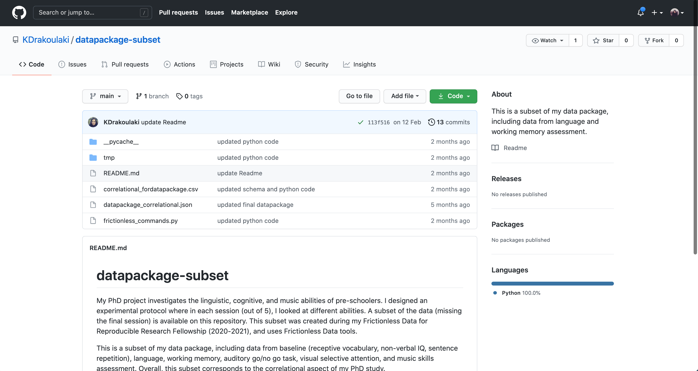
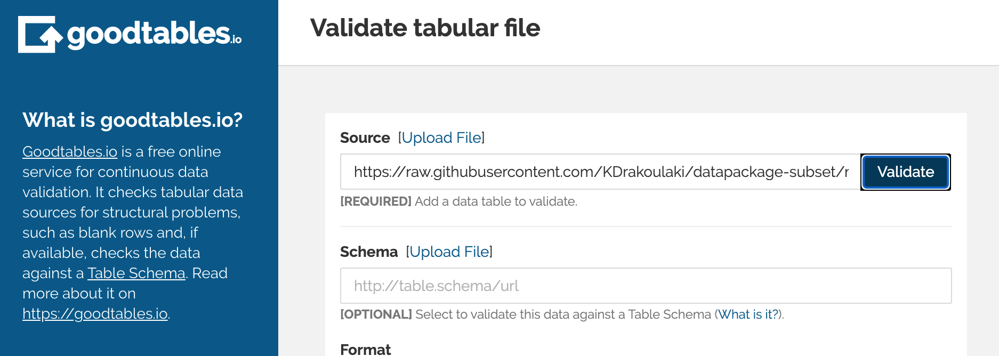
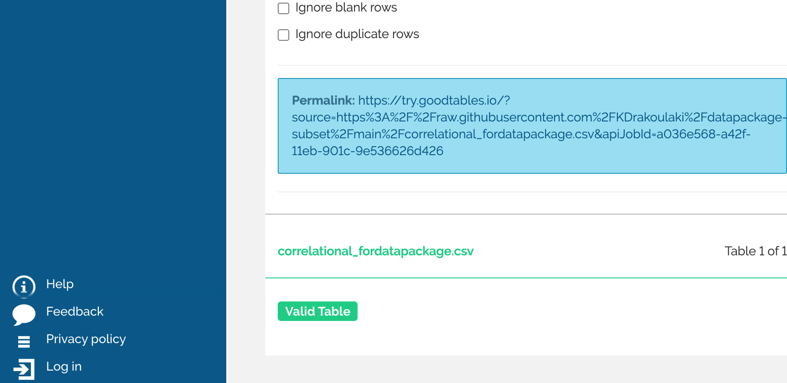
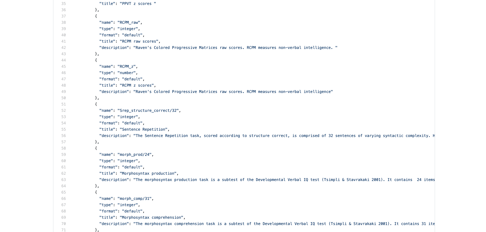

On README files, sharing data and interoperability
One of the goals of the Frictionless Data Fellowship has been to help us make our research more interoperable, which is another way of saying: something that other researchers can use, even if they have entirely different systems or tools with which they approach the same topic. While my colleagues and I have written about the importance of accessibility as well as openness, and the variety of challenges they might encounter when doing so, interoperability was something I had a bit more trouble with.
Thinking about interoperability
This required a shift in perspective on my part, because anthropology and sociology (the former in particular) tend to pride themselves on the relative singularity of their "data". While both disciplines try to understand the "human experience" by observing lived behavior, the methods that they use and the data that they produce are nearly impossible to replicate. To a large degree, this comes with the territory: to study anything "ethnographically" is simply to observe people in real time, to draw trends from what you observe, as well as from the conversations and interviews you conduct. This might seem relatively easy, but it's actually quite difficult, because at smaller scales, it becomes easier to see how humans are incredibly complicated, messy, and deeply contradictory. Leaving room for these contradictory behaviors, yet still trying to draw overarching conclusions and trends from them is what makes ethnographic work so interesting (and important, in my view)... but also perhaps less appealing, actionable, and affordable than data science, which allows for analysis at scale.
It is the theories and terms that emerge from social science that are perhaps interoperable, because they evolve into the language we use to describe social phenomena. However, that's not the same thing as making raw data interoperable, because by the time it has been transformed into theory, the ideas are far from "raw". While translating theories across disciplines can be likened to translating across languages, or further still, across entire ontologies (foundational approaches or 'ways of being'), their "raw data" remains highly distinctive. In fact, it is often the individual's experience – or the singular nature of their data – that becomes the core of their findings.
This is what made the experience of using Katerina's data so interesting to me, as it required a somewhat foundational shift in how I approach research itself. She is someone that also straddles worlds, both geographically and disciplinarily. Currently doing her PhD in Linguistics on linguistic, cognitive, and music abilities of pre-schoolers in Greece, we've talked about how her work overlaps (and doesn't) with ethnomusicologists, and how her country sits at the intersection of "East" and "West in Greece". I was keen to learn more about her work, and see if it would help me to ground 'interoperability' in a concrete example.
Getting started
The first step of reproducing Katerina's data was to clone her repository onto my local computer, as well as explore her Github repository.

The first step is always to look at someone's README file, which is meant to guide you through a repository's contents.
Reading a description of someone's work that is understandable and actionable is always a good reminder that I should try to do the same, to make sure that my repository's logic makes sense to someone other than myself. I tried to find this in Katerina's README file, and I really liked that she included a section on 'ethical considerations', along with a description of her repository's contents. There's so much that I don't understand about her field (i.e. how do you test 'working memory' or 'visual selective attention'?). But in any case, it was interesting to try and learn!
In my last blog, I wrote about UTF-8 encoding, and how it became a way for me to understand how technology builds upon itself (and ensuing oversights) over time. It also became a way for me to think about the "culture" of software as one that has norms, values, and particular histories just like any other. Over the past 9 months, I've noticed that README files are almost universal within open source projects, and was curious as to where they came from. While it is logical that files should have a description of some sort, especially if they are going to be shared with others, why are they all called README?
It turns out, the name might have originally been a joke, perhaps inspired by the magical 'Eat Me' and 'Drink Me' edibles that Alice injested while in Wonderland, the fantastical children's story by Lewis Carroll. According to Omar Abdelhafith, early versions of the README file appeared in 1974 for the PDP-10 DECUS project, an early and influential iteration of the computer that eventually became the basis of ARPANET (what we now know as the internet).
In a way, it seems fitting that my venture into Katerina's data began with her README file. Because humans share things between one another – organically, and perhaps inevitably – we tend to try to develop systems to facilitate the process. I guess this is why interoperability is so important, especially when it comes to research.
To get started, I cloned her repository onto my own device, to explore her data a bit more.

A screenshot of Katerina's data.
But it was when I started looking at Katerina's actual data that I realized how truly little I could understand!
Firstly, her dataset used some acronyms that I didn't recognize. With a quick google search, I found out that PPVT meant Peabody Picture Vocabulary Test and RCPM meant Raven's Colored Progressive Matrices. These assessments are used to measure memory and literacy through vocabulary tests and abstract reasoning exercises.
When I looked up the tests themselves, there were some things that I recognized, or found familiar. I realized that as a kid, I had probably been exposed to similar tests. At the time, I had obviously not thought about how they were used as data for researchers like Katerina.
She will have to correct me on this in our next meeting, but PPVT and RCPM tests can look something like this:


Left: Example of RCPM test. Right: Example of PPVT test. Source: Youtube (screenshots).
While I'd read texts about critical pedagogy and the philosophy of education, I had never really thought about how and why young people retain information, or how to measure it at scale. While their foundations seem to be divergent, I wonder if these types of studies and philosophies are compatible. Are there any spaces where these approaches are combined? In other words – can philosophies about the content of educational practices be combined with the memorization or analytical methods that help us to maximize learning and/or understanding of a subject? Should they be combined in the first place? Some food for thought.
In any case, onwards to the next step: validating Katerina's dataset.
Validating with try.goodtables
Following the steps that I would take with my own research, the first thing I did was try to check the structure and validity of her data using Goodtables.io.
I really like the online tool, try.goodtables.io because it allows you to do a really quick check for structural or formatting issues, before getting started on anything more complicated.
 
Everything seemed to check out, so I moved on to next steps: replicating her data package, to see how close mine might get to her own.
Replicating the datapackage
Learning about data packages has been one of the most instructive parts of this fellowship, and I've learned a lot from making one for the dataset I'm working with. Having "data about your data" can be really helpful, especially when it contains terms or labels that might not make sense to anyone besides the researcher.
In many ways, data packages are quite similar to README files, because they help people to navigate the information you've given them, or released into the internet ether. Now I can see why documentation is so important for any project, not just open source software.
In any case, I used a url of Katerina's raw data to make a new data package, using the handy create.frictionlessdata.io tool.


But here's where it got confusing for me. Beyond the first few labels (which I could infer, because I know how to look up the terms online) – I really had no idea how to label Katerina's data!

Even though the names of the sectors were descriptive, I felt as though I needed more context in order to know how to understand her data, or even how to equip myself with the tools to learn more about it. In other words, I needed data about her data, in order to google effectively.

After awhile, I ended up taking a peek at her data package, to see what I was missing. The descriptions were very instructive, and helped me to understand what tools and measures she was using. Because it even included citations, I could see where I might start if I wanted to truly recreate her study, and make a data package that could more closely mimic her own.
Datapackaging for interdisciplinarity
While my inability to recreate Katerina's data package might stem from the fact that I am not a scholar in linguistics, for me, attempting to recreate it also reinforced just how crucial it was for my own learning. The data package gives me a foundation to work off of, and the tools to learn more about her subject.
Because of how it helped me, I've been thinking about what role data packages could play in guiding non-experts to navigate data-driven research.
For example, I could see them being incredibly helpful for data journalists, who need to digest, understand, and translate information for the public rapidly – and often deal with raw datasets that may or may not be intelligible from the get go. As I've learned more about the time required to simply clean and format datasets, this exercise has made me realize that the same could be said for "making heads or tails" of data, so to speak. In other words, just figuring out what the data is saying could take equally, if not more time.
After reflecting on the conflicts that arise when different disciplines intersect, which I wrote about in my last blog, this exercise very much felt like a continuation of this train of thought. What if researchers of all types wrote prototypical "data packages" about their research, that gave greater context to their work, or explained its wider relevance? In my fields, many researchers tend to find this in 'the art of the footnote', but this type of informal knowledge or context is not operationalized in any real way.
Similar to how README files and data packages help users to understand data, file topologies, and the organizational logics of a project... perhaps there are better ways of facilitating mutual understanding across academic disciplines that research similar topics. Case in point: it's already helped an anthropologist/sociologist to learn from a linguist.
What if interdisciplinarity itself could be made more interoperable?
Thanks Katerina!